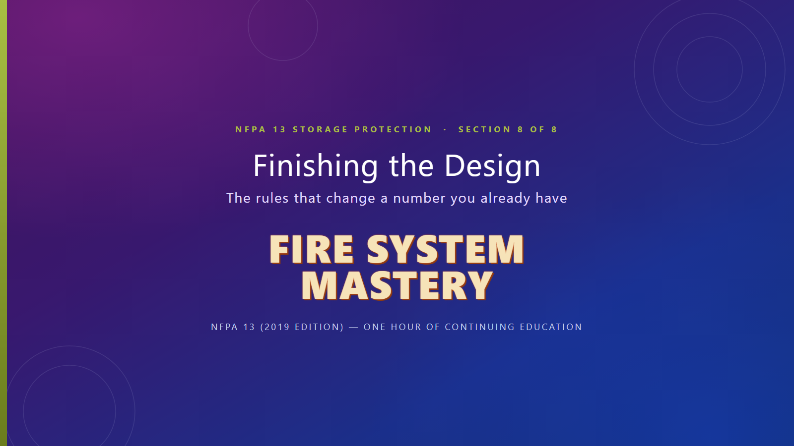

Watch all 17 slides with narration, then pass the 10-question test to finish the course.

Answer all 10 questions, then submit.
That is all eight sections. Your certificate is available from the course page.
Your progress is saved in this browser. Come back to the course page to pick up where you left off.
Questions? Email maurice@firesystemmastery.com.